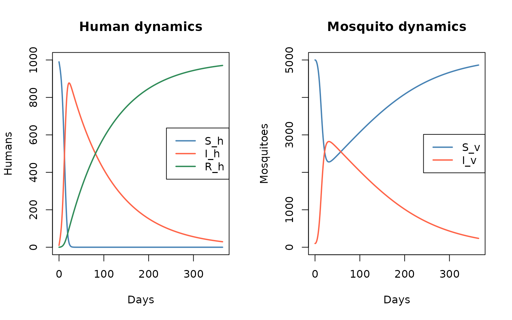
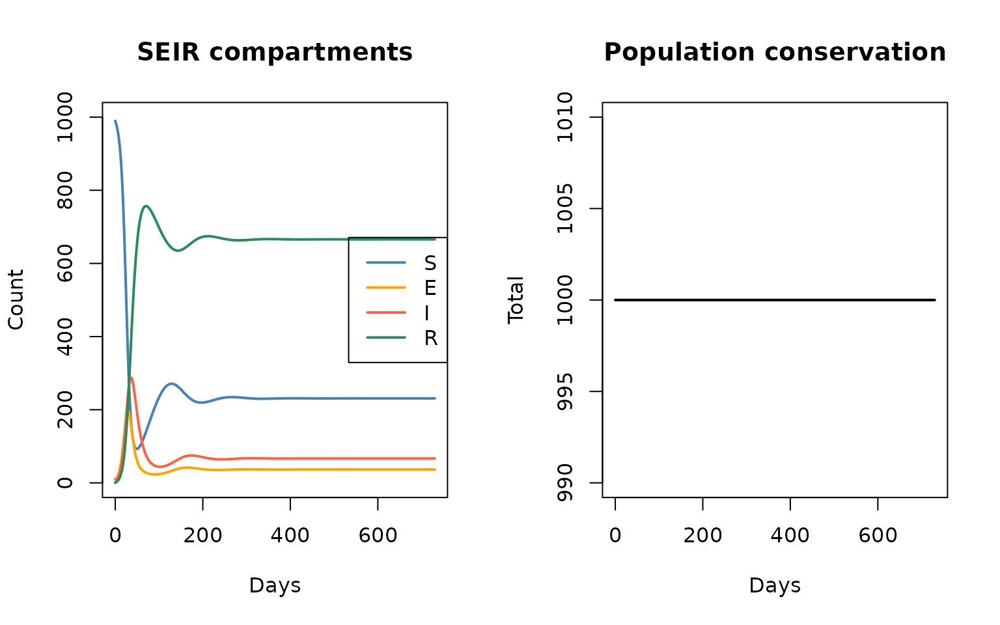
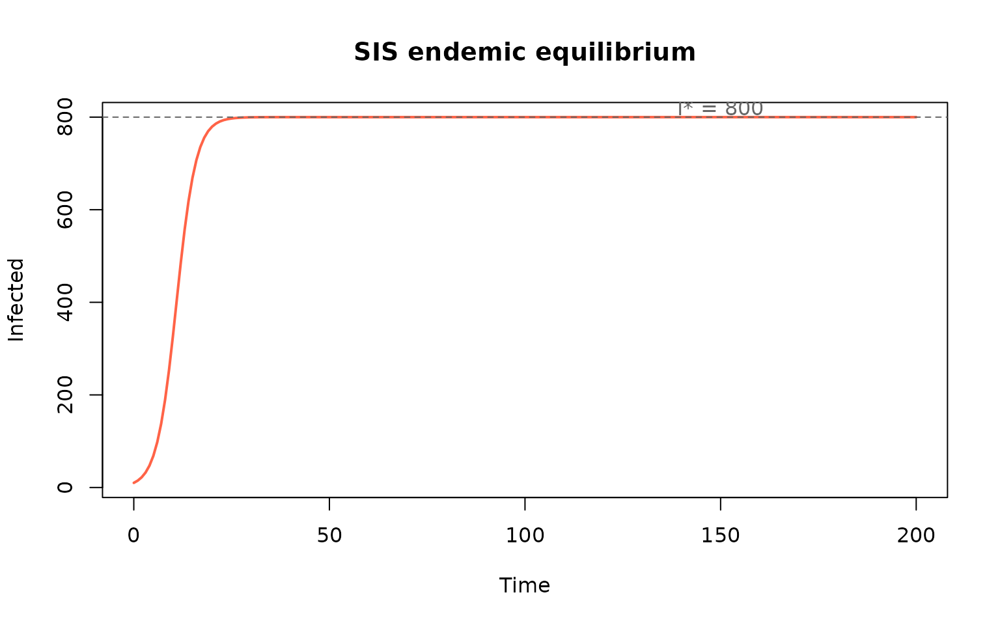
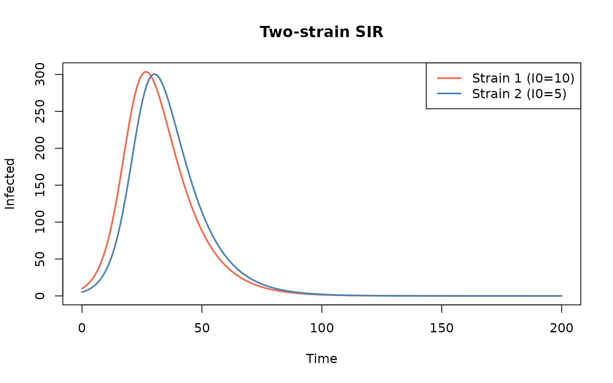
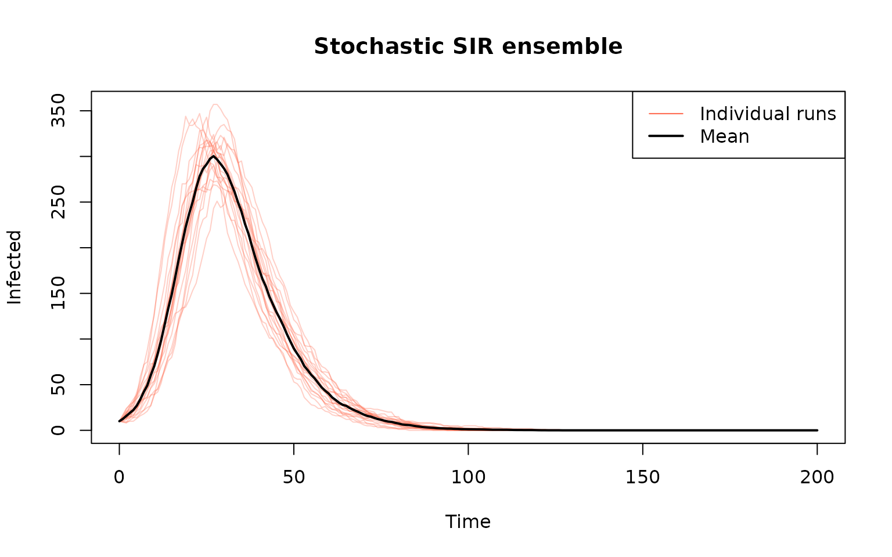
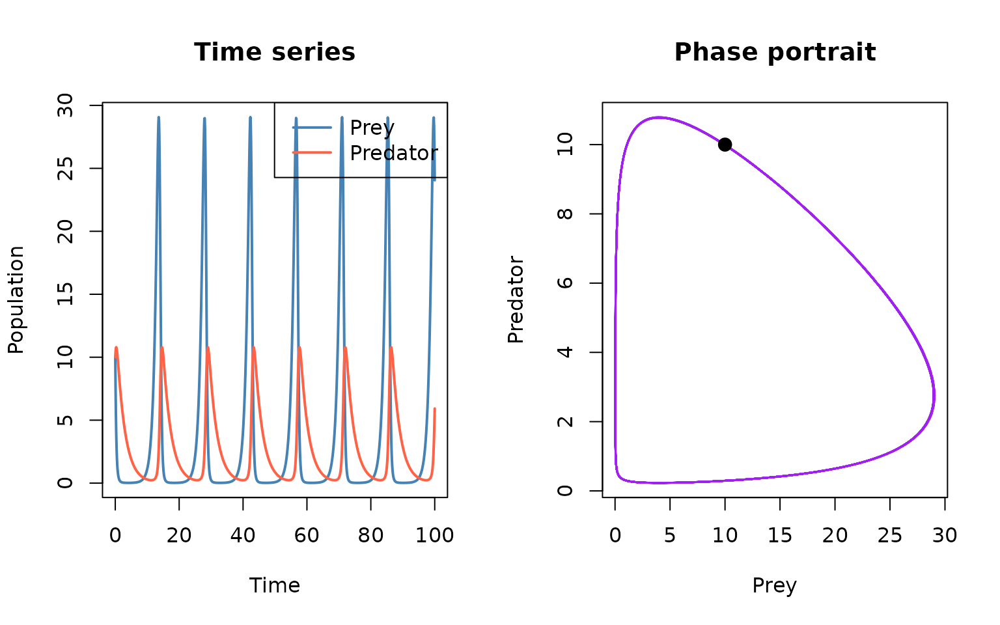
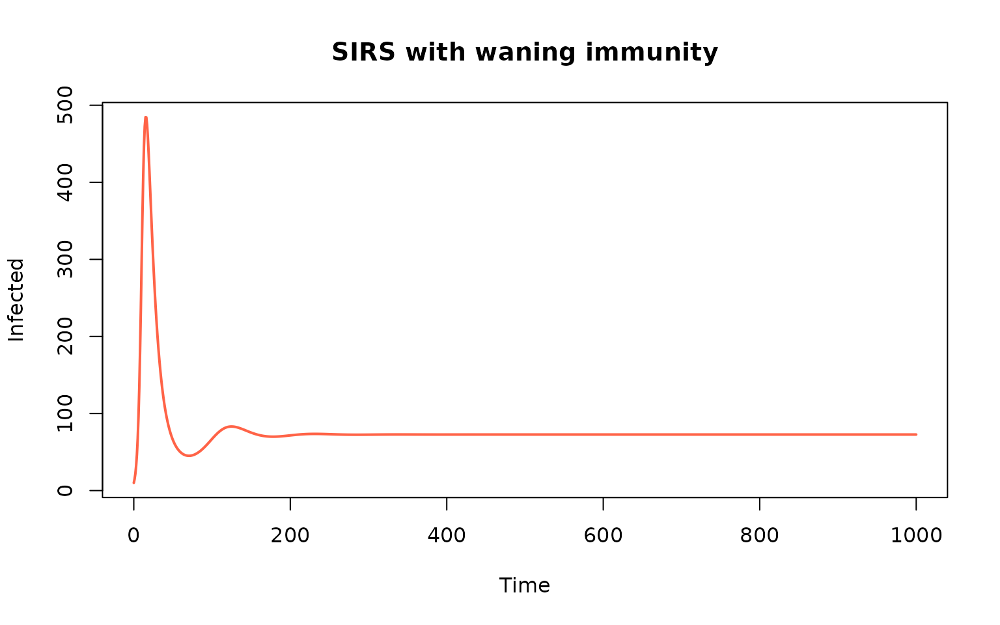

Introduction
This vignette demonstrates additional epidemiological models beyond
the basic SIR, illustrating the flexibility of
algebraicodin’s stock-flow framework. Each model is built,
compiled via odin2, and simulated.
Ross-Macdonald vector-borne model
The Ross-Macdonald model describes malaria-like transmission between humans and mosquitoes. Humans cycle through Susceptible → Infected → Recovered, while mosquitoes go from Susceptible → Infected (no recovery). Mosquitoes have birth and death dynamics.
Key features demonstrated: - Two host populations (humans and mosquitoes) in a single stock-flow model - NULL flows for birth (inflow from nothing) and death (outflow to nothing) - Multiple sum variables for separate population totals
ross_mac <- stock_and_flow(
stocks = c("Sh", "Ih", "Rh", "Sv", "Iv"),
flows = list(
# Human disease dynamics
human_inf = flow(from = "Sh", to = "Ih",
rate = a * b * Iv / Nh * Sh),
human_rec = flow(from = "Ih", to = "Rh", rate = r * Ih),
# Mosquito infection
mosq_inf = flow(from = "Sv", to = "Iv",
rate = a * c_param * Ih / Nh * Sv),
# Mosquito demographics
mosq_birth = flow(from = NULL, to = "Sv", rate = mu * Nm),
mosq_death_s = flow(from = "Sv", to = NULL, rate = mu * Sv),
mosq_death_i = flow(from = "Iv", to = NULL, rate = mu * Iv)
),
sums = list(
Nh = c("Sh", "Ih", "Rh"),
Nm = c("Sv", "Iv")
),
params = c("a", "b", "c_param", "r", "mu")
)Parameters: - a — mosquito biting rate - b
— probability of human infection per bite - c_param —
probability of mosquito infection per bite on infected human -
r — human recovery rate - mu — mosquito
birth/death rate (1/lifespan)
cat(sf_to_odin(ross_mac, type = "ode"))
#> a <- parameter()
#> b <- parameter()
#> c_param <- parameter()
#> r <- parameter()
#> mu <- parameter()
#>
#> Sh0 <- parameter(0)
#> initial(Sh) <- Sh0
#> Ih0 <- parameter(0)
#> initial(Ih) <- Ih0
#> Rh0 <- parameter(0)
#> initial(Rh) <- Rh0
#> Sv0 <- parameter(0)
#> initial(Sv) <- Sv0
#> Iv0 <- parameter(0)
#> initial(Iv) <- Iv0
#>
#> Nh <- Sh + Ih + Rh
#> Nm <- Sv + Iv
#>
#> v_human_inf <- a * b * Iv/Nh * Sh
#> v_human_rec <- r * Ih
#> v_mosq_inf <- a * c_param * Ih/Nh * Sv
#> v_mosq_birth <- mu * Nm
#> v_mosq_death_s <- mu * Sv
#> v_mosq_death_i <- mu * Iv
#>
#> deriv(Sh) <- - v_human_inf
#> deriv(Ih) <- v_human_inf - v_human_rec
#> deriv(Rh) <- v_human_rec
#> deriv(Sv) <- - v_mosq_inf + v_mosq_birth - v_mosq_death_s
#> deriv(Iv) <- v_mosq_inf - v_mosq_death_i
gen <- sf_to_odin_system(ross_mac, type = "ode")
sys <- dust_system_create(gen(), list(
a = 0.3, b = 0.5, c_param = 0.5, r = 0.01, mu = 0.1,
Sh0 = 990, Ih0 = 10, Rh0 = 0, Sv0 = 5000, Iv0 = 100
))
#> ✔ Wrote 'DESCRIPTION'
#> ✔ Wrote 'NAMESPACE'
#> ✔ Wrote 'R/dust.R'
#> ✔ Wrote 'src/dust.cpp'
#> ✔ Wrote 'src/Makevars'
#> ℹ 13 functions decorated with [[cpp11::register]]
#> ✔ generated file cpp11.R
#> ✔ generated file cpp11.cpp
#> ℹ Re-compiling odin.system0d386389
#> ── R CMD INSTALL ───────────────────────────────────────────────────────────────
#> * installing *source* package ‘odin.system0d386389’ ...
#> ** this is package ‘odin.system0d386389’ version ‘0.0.1’
#> ** using staged installation
#> ** libs
#> using C++ compiler: ‘g++ (Ubuntu 13.3.0-6ubuntu2~24.04.1) 13.3.0’
#> g++ -std=gnu++17 -I"/opt/R/4.5.3/lib/R/include" -DNDEBUG -I'/home/runner/work/_temp/Library/cpp11/include' -I'/home/runner/work/_temp/Library/dust2/include' -I'/home/runner/work/_temp/Library/monty/include' -I/usr/local/include -DHAVE_INLINE -fopenmp -fpic -g -O2 -Wall -pedantic -fdiagnostics-color=always -c cpp11.cpp -o cpp11.o
#> g++ -std=gnu++17 -I"/opt/R/4.5.3/lib/R/include" -DNDEBUG -I'/home/runner/work/_temp/Library/cpp11/include' -I'/home/runner/work/_temp/Library/dust2/include' -I'/home/runner/work/_temp/Library/monty/include' -I/usr/local/include -DHAVE_INLINE -fopenmp -fpic -g -O2 -Wall -pedantic -fdiagnostics-color=always -c dust.cpp -o dust.o
#> g++ -std=gnu++17 -shared -L/opt/R/4.5.3/lib/R/lib -L/usr/local/lib -o odin.system0d386389.so cpp11.o dust.o -fopenmp -L/opt/R/4.5.3/lib/R/lib -lR
#> installing to /tmp/RtmpNLu502/devtools_install_3104a32a678/00LOCK-dust_310425b19e90/00new/odin.system0d386389/libs
#> ** checking absolute paths in shared objects and dynamic libraries
#> * DONE (odin.system0d386389)
#> ℹ Loading odin.system0d386389
dust_system_set_state_initial(sys)
t <- seq(0, 365)
res <- dust_system_simulate(sys, t)
st <- dust_unpack_state(sys, res)
par(mfrow = c(1, 2))
plot(t, st$Sh, type = "l", col = "steelblue", lwd = 2,
ylim = c(0, 1000), xlab = "Days", ylab = "Humans",
main = "Human dynamics")
lines(t, st$Ih, col = "tomato", lwd = 2)
lines(t, st$Rh, col = "seagreen", lwd = 2)
legend("right", c("S_h", "I_h", "R_h"),
col = c("steelblue", "tomato", "seagreen"), lty = 1, lwd = 2)
plot(t, st$Sv, type = "l", col = "steelblue", lwd = 2,
ylim = c(0, max(st$Sv)), xlab = "Days", ylab = "Mosquitoes",
main = "Mosquito dynamics")
lines(t, st$Iv, col = "tomato", lwd = 2)
legend("right", c("S_v", "I_v"),
col = c("steelblue", "tomato"), lty = 1, lwd = 2)
Ross-Macdonald vector-borne disease dynamics
The human population is conserved (no human demographics), while the mosquito population reaches a steady state through births and deaths:
SEIR with demographics
The SEIR model adds an Exposed compartment (latent period before becoming infectious). Adding birth and death processes creates an endemic equilibrium where the disease persists indefinitely.
seir_demo <- stock_and_flow(
stocks = c("S", "E", "I", "R"),
flows = list(
exposure = flow(from = "S", to = "E", rate = beta * S * I / N),
progression = flow(from = "E", to = "I", rate = sigma * E),
recovery = flow(from = "I", to = "R", rate = gamma * I),
birth = flow(from = NULL, to = "S", rate = mu * N),
death_S = flow(from = "S", to = NULL, rate = mu * S),
death_E = flow(from = "E", to = NULL, rate = mu * E),
death_I = flow(from = "I", to = NULL, rate = mu * I),
death_R = flow(from = "R", to = NULL, rate = mu * R)
),
sums = list(N = c("S", "E", "I", "R")),
params = c("beta", "sigma", "gamma", "mu")
)With demographics, births balance deaths so the total population stays roughly constant, and the disease reaches an endemic equilibrium:
gen <- sf_to_odin_system(seir_demo, type = "ode")
sys <- dust_system_create(gen(), list(
beta = 0.5, sigma = 0.2, gamma = 0.1, mu = 0.01,
S0 = 990, E0 = 0, I0 = 10, R0 = 0
))
#> ✔ Wrote 'DESCRIPTION'
#> ✔ Wrote 'NAMESPACE'
#> ✔ Wrote 'R/dust.R'
#> ✔ Wrote 'src/dust.cpp'
#> ✔ Wrote 'src/Makevars'
#> ℹ 13 functions decorated with [[cpp11::register]]
#> ✔ generated file cpp11.R
#> ✔ generated file cpp11.cpp
#> ℹ Re-compiling odin.system0ef83fae
#> ── R CMD INSTALL ───────────────────────────────────────────────────────────────
#> * installing *source* package ‘odin.system0ef83fae’ ...
#> ** this is package ‘odin.system0ef83fae’ version ‘0.0.1’
#> ** using staged installation
#> ** libs
#> using C++ compiler: ‘g++ (Ubuntu 13.3.0-6ubuntu2~24.04.1) 13.3.0’
#> g++ -std=gnu++17 -I"/opt/R/4.5.3/lib/R/include" -DNDEBUG -I'/home/runner/work/_temp/Library/cpp11/include' -I'/home/runner/work/_temp/Library/dust2/include' -I'/home/runner/work/_temp/Library/monty/include' -I/usr/local/include -DHAVE_INLINE -fopenmp -fpic -g -O2 -Wall -pedantic -fdiagnostics-color=always -c cpp11.cpp -o cpp11.o
#> g++ -std=gnu++17 -I"/opt/R/4.5.3/lib/R/include" -DNDEBUG -I'/home/runner/work/_temp/Library/cpp11/include' -I'/home/runner/work/_temp/Library/dust2/include' -I'/home/runner/work/_temp/Library/monty/include' -I/usr/local/include -DHAVE_INLINE -fopenmp -fpic -g -O2 -Wall -pedantic -fdiagnostics-color=always -c dust.cpp -o dust.o
#> g++ -std=gnu++17 -shared -L/opt/R/4.5.3/lib/R/lib -L/usr/local/lib -o odin.system0ef83fae.so cpp11.o dust.o -fopenmp -L/opt/R/4.5.3/lib/R/lib -lR
#> installing to /tmp/RtmpNLu502/devtools_install_31043c0d17d0/00LOCK-dust_310464b7ef0a/00new/odin.system0ef83fae/libs
#> ** checking absolute paths in shared objects and dynamic libraries
#> * DONE (odin.system0ef83fae)
#> ℹ Loading odin.system0ef83fae
dust_system_set_state_initial(sys)
t <- seq(0, 730) # 2 years
res <- dust_system_simulate(sys, t)
st <- dust_unpack_state(sys, res)
par(mfrow = c(1, 2))
plot(t, st$S, type = "l", col = "steelblue", lwd = 2,
ylim = c(0, 1000), xlab = "Days", ylab = "Count",
main = "SEIR compartments")
lines(t, st$E, col = "orange", lwd = 2)
lines(t, st$I, col = "tomato", lwd = 2)
lines(t, st$R, col = "seagreen", lwd = 2)
legend("right", c("S", "E", "I", "R"),
col = c("steelblue", "orange", "tomato", "seagreen"), lty = 1, lwd = 2)
total <- st$S + st$E + st$I + st$R
plot(t, total, type = "l", col = "black", lwd = 2,
xlab = "Days", ylab = "Total",
main = "Population conservation")
SEIR with demographics — epidemic settles to endemic state
SIS model (no immunity)
In the SIS model, recovered individuals return directly to the susceptible pool. This creates an endemic equilibrium at I* = N(1 − γ/β) when R₀ = β/γ > 1.
sis <- stock_and_flow(
stocks = c("S", "I"),
flows = list(
infection = flow(from = "S", to = "I", rate = beta * S * I / N),
recovery = flow(from = "I", to = "S", rate = gamma * I)
),
sums = list(N = c("S", "I")),
params = c("beta", "gamma")
)
gen <- sf_to_odin_system(sis, type = "ode")
sys <- dust_system_create(gen(), list(
beta = 0.5, gamma = 0.1,
S0 = 990, I0 = 10
))
#> ✔ Wrote 'DESCRIPTION'
#> ✔ Wrote 'NAMESPACE'
#> ✔ Wrote 'R/dust.R'
#> ✔ Wrote 'src/dust.cpp'
#> ✔ Wrote 'src/Makevars'
#> ℹ 13 functions decorated with [[cpp11::register]]
#> ✔ generated file cpp11.R
#> ✔ generated file cpp11.cpp
#> ℹ Re-compiling odin.system0b566333
#> ── R CMD INSTALL ───────────────────────────────────────────────────────────────
#> * installing *source* package ‘odin.system0b566333’ ...
#> ** this is package ‘odin.system0b566333’ version ‘0.0.1’
#> ** using staged installation
#> ** libs
#> using C++ compiler: ‘g++ (Ubuntu 13.3.0-6ubuntu2~24.04.1) 13.3.0’
#> g++ -std=gnu++17 -I"/opt/R/4.5.3/lib/R/include" -DNDEBUG -I'/home/runner/work/_temp/Library/cpp11/include' -I'/home/runner/work/_temp/Library/dust2/include' -I'/home/runner/work/_temp/Library/monty/include' -I/usr/local/include -DHAVE_INLINE -fopenmp -fpic -g -O2 -Wall -pedantic -fdiagnostics-color=always -c cpp11.cpp -o cpp11.o
#> g++ -std=gnu++17 -I"/opt/R/4.5.3/lib/R/include" -DNDEBUG -I'/home/runner/work/_temp/Library/cpp11/include' -I'/home/runner/work/_temp/Library/dust2/include' -I'/home/runner/work/_temp/Library/monty/include' -I/usr/local/include -DHAVE_INLINE -fopenmp -fpic -g -O2 -Wall -pedantic -fdiagnostics-color=always -c dust.cpp -o dust.o
#> g++ -std=gnu++17 -shared -L/opt/R/4.5.3/lib/R/lib -L/usr/local/lib -o odin.system0b566333.so cpp11.o dust.o -fopenmp -L/opt/R/4.5.3/lib/R/lib -lR
#> installing to /tmp/RtmpNLu502/devtools_install_31047af6b3bf/00LOCK-dust_310440629159/00new/odin.system0b566333/libs
#> ** checking absolute paths in shared objects and dynamic libraries
#> * DONE (odin.system0b566333)
#> ℹ Loading odin.system0b566333
dust_system_set_state_initial(sys)
t <- seq(0, 200)
res <- dust_system_simulate(sys, t)
st <- dust_unpack_state(sys, res)
I_star <- 1000 * (1 - 0.1 / 0.5)
plot(t, st$I, type = "l", col = "tomato", lwd = 2,
xlab = "Time", ylab = "Infected",
main = "SIS endemic equilibrium")
abline(h = I_star, lty = 2, col = "grey40")
text(150, I_star + 20, sprintf("I* = %g", I_star), col = "grey40")
SIS model converges to endemic equilibrium
Multi-strain SIR via stratification
Stratification can model multiple strains sharing the same susceptible pool. Each strain has independent infection and recovery dynamics:
sir <- stock_and_flow(
stocks = c("S", "I", "R"),
flows = list(
infection = flow(from = "S", to = "I", rate = beta * S * I / N),
recovery = flow(from = "I", to = "R", rate = gamma * I)
),
sums = list(N = c("S", "I", "R")),
params = c("beta", "gamma")
)
sir_2strain <- sf_stratify(sir, c("strain1", "strain2"),
flow_types = c(infection = "disease", recovery = "disease"))
code <- sf_to_odin(sir_2strain, type = "ode")
cat(code)
#> beta <- parameter()
#> gamma <- parameter()
#>
#> S_strain10 <- parameter(0)
#> initial(S_strain1) <- S_strain10
#> S_strain20 <- parameter(0)
#> initial(S_strain2) <- S_strain20
#> I_strain10 <- parameter(0)
#> initial(I_strain1) <- I_strain10
#> I_strain20 <- parameter(0)
#> initial(I_strain2) <- I_strain20
#> R_strain10 <- parameter(0)
#> initial(R_strain1) <- R_strain10
#> R_strain20 <- parameter(0)
#> initial(R_strain2) <- R_strain20
#>
#> N_strain1 <- S_strain1 + I_strain1 + R_strain1
#> N_strain2 <- S_strain2 + I_strain2 + R_strain2
#>
#> v_infection_id_strain1 <- beta * S_strain1 * I_strain1/N_strain1
#> v_infection_id_strain2 <- beta * S_strain2 * I_strain2/N_strain2
#> v_recovery_id_strain1 <- gamma * I_strain1
#> v_recovery_id_strain2 <- gamma * I_strain2
#>
#> deriv(S_strain1) <- - v_infection_id_strain1
#> deriv(S_strain2) <- - v_infection_id_strain2
#> deriv(I_strain1) <- v_infection_id_strain1 - v_recovery_id_strain1
#> deriv(I_strain2) <- v_infection_id_strain2 - v_recovery_id_strain2
#> deriv(R_strain1) <- v_recovery_id_strain1
#> deriv(R_strain2) <- v_recovery_id_strain2
gen <- sf_to_odin_system(sir_2strain, type = "ode")
sys <- dust_system_create(gen(), list(
beta = 0.3, gamma = 0.1,
S_strain10 = 990, S_strain20 = 990,
I_strain10 = 10, I_strain20 = 5,
R_strain10 = 0, R_strain20 = 0
))
#> ✔ Wrote 'DESCRIPTION'
#> ✔ Wrote 'NAMESPACE'
#> ✔ Wrote 'R/dust.R'
#> ✔ Wrote 'src/dust.cpp'
#> ✔ Wrote 'src/Makevars'
#> ℹ 13 functions decorated with [[cpp11::register]]
#> ✔ generated file cpp11.R
#> ✔ generated file cpp11.cpp
#> ℹ Re-compiling odin.system810c5817
#> ── R CMD INSTALL ───────────────────────────────────────────────────────────────
#> * installing *source* package ‘odin.system810c5817’ ...
#> ** this is package ‘odin.system810c5817’ version ‘0.0.1’
#> ** using staged installation
#> ** libs
#> using C++ compiler: ‘g++ (Ubuntu 13.3.0-6ubuntu2~24.04.1) 13.3.0’
#> g++ -std=gnu++17 -I"/opt/R/4.5.3/lib/R/include" -DNDEBUG -I'/home/runner/work/_temp/Library/cpp11/include' -I'/home/runner/work/_temp/Library/dust2/include' -I'/home/runner/work/_temp/Library/monty/include' -I/usr/local/include -DHAVE_INLINE -fopenmp -fpic -g -O2 -Wall -pedantic -fdiagnostics-color=always -c cpp11.cpp -o cpp11.o
#> g++ -std=gnu++17 -I"/opt/R/4.5.3/lib/R/include" -DNDEBUG -I'/home/runner/work/_temp/Library/cpp11/include' -I'/home/runner/work/_temp/Library/dust2/include' -I'/home/runner/work/_temp/Library/monty/include' -I/usr/local/include -DHAVE_INLINE -fopenmp -fpic -g -O2 -Wall -pedantic -fdiagnostics-color=always -c dust.cpp -o dust.o
#> g++ -std=gnu++17 -shared -L/opt/R/4.5.3/lib/R/lib -L/usr/local/lib -o odin.system810c5817.so cpp11.o dust.o -fopenmp -L/opt/R/4.5.3/lib/R/lib -lR
#> installing to /tmp/RtmpNLu502/devtools_install_31046e31a2a5/00LOCK-dust_310452e24e0f/00new/odin.system810c5817/libs
#> ** checking absolute paths in shared objects and dynamic libraries
#> * DONE (odin.system810c5817)
#> ℹ Loading odin.system810c5817
dust_system_set_state_initial(sys)
t <- seq(0, 200)
res <- dust_system_simulate(sys, t)
st <- dust_unpack_state(sys, res)
plot(t, st$I_strain1, type = "l", col = "tomato", lwd = 2,
ylim = c(0, max(st$I_strain1, st$I_strain2)),
xlab = "Time", ylab = "Infected",
main = "Two-strain SIR")
lines(t, st$I_strain2, col = "steelblue", lwd = 2)
legend("topright", c("Strain 1 (I0=10)", "Strain 2 (I0=5)"),
col = c("tomato", "steelblue"), lty = 1, lwd = 2)
Two competing strains with different transmission rates
Stochastic SIR
The same base model can be compiled as a stochastic discrete-time model with Binomial transitions:
gen_stoch <- sf_to_odin_system(sir, type = "stochastic")
n_reps <- 20
t <- seq(0, 200)
I_matrix <- matrix(NA, nrow = n_reps, ncol = length(t))
for (k in seq_len(n_reps)) {
sys <- dust_system_create(gen_stoch(), list(
beta = 0.3, gamma = 0.1,
S0 = 990, I0 = 10, R0 = 0
), n_particles = 1, dt = 0.25)
dust_system_set_state_initial(sys)
res <- dust_system_simulate(sys, t)
st <- dust_unpack_state(sys, res)
I_matrix[k, ] <- as.numeric(st$I)
}
#> ✔ Wrote 'DESCRIPTION'
#> ✔ Wrote 'NAMESPACE'
#> ✔ Wrote 'R/dust.R'
#> ✔ Wrote 'src/dust.cpp'
#> ✔ Wrote 'src/Makevars'
#> ℹ 12 functions decorated with [[cpp11::register]]
#> ✔ generated file cpp11.R
#> ✔ generated file cpp11.cpp
#> ℹ Re-compiling odin.system39f2f34d
#> ── R CMD INSTALL ───────────────────────────────────────────────────────────────
#> * installing *source* package ‘odin.system39f2f34d’ ...
#> ** this is package ‘odin.system39f2f34d’ version ‘0.0.1’
#> ** using staged installation
#> ** libs
#> using C++ compiler: ‘g++ (Ubuntu 13.3.0-6ubuntu2~24.04.1) 13.3.0’
#> g++ -std=gnu++17 -I"/opt/R/4.5.3/lib/R/include" -DNDEBUG -I'/home/runner/work/_temp/Library/cpp11/include' -I'/home/runner/work/_temp/Library/dust2/include' -I'/home/runner/work/_temp/Library/monty/include' -I/usr/local/include -DHAVE_INLINE -fopenmp -fpic -g -O2 -Wall -pedantic -fdiagnostics-color=always -c cpp11.cpp -o cpp11.o
#> g++ -std=gnu++17 -I"/opt/R/4.5.3/lib/R/include" -DNDEBUG -I'/home/runner/work/_temp/Library/cpp11/include' -I'/home/runner/work/_temp/Library/dust2/include' -I'/home/runner/work/_temp/Library/monty/include' -I/usr/local/include -DHAVE_INLINE -fopenmp -fpic -g -O2 -Wall -pedantic -fdiagnostics-color=always -c dust.cpp -o dust.o
#> g++ -std=gnu++17 -shared -L/opt/R/4.5.3/lib/R/lib -L/usr/local/lib -o odin.system39f2f34d.so cpp11.o dust.o -fopenmp -L/opt/R/4.5.3/lib/R/lib -lR
#> installing to /tmp/RtmpNLu502/devtools_install_310416db2c43/00LOCK-dust_31042b0fdca0/00new/odin.system39f2f34d/libs
#> ** checking absolute paths in shared objects and dynamic libraries
#> * DONE (odin.system39f2f34d)
#> ℹ Loading odin.system39f2f34d
#> ℹ Using cached generator
#> ℹ Using cached generator
#> ℹ Using cached generator
#> ℹ Using cached generator
#> ℹ Using cached generator
#> ℹ Using cached generator
#> ℹ Using cached generator
#> ℹ Using cached generator
#> ℹ Using cached generator
#> ℹ Using cached generator
#> ℹ Using cached generator
#> ℹ Using cached generator
#> ℹ Using cached generator
#> ℹ Using cached generator
#> ℹ Using cached generator
#> ℹ Using cached generator
#> ℹ Using cached generator
#> ℹ Using cached generator
#> ℹ Using cached generator
matplot(t, t(I_matrix), type = "l", lty = 1, col = adjustcolor("tomato", 0.3),
xlab = "Time", ylab = "Infected", main = "Stochastic SIR ensemble")
lines(t, colMeans(I_matrix), col = "black", lwd = 2)
legend("topright", c("Individual runs", "Mean"),
col = c("tomato", "black"), lty = 1, lwd = c(1, 2))
Stochastic SIR — 20 realizations
Lotka-Volterra predator-prey
Stock-flow models are not limited to epidemiology. Here we model the classic Lotka-Volterra predator-prey dynamics:
lv <- stock_and_flow(
stocks = c("prey", "pred"),
flows = list(
prey_birth = flow(from = NULL, to = "prey", rate = alpha * prey),
predation = flow(from = "prey", to = NULL, rate = beta * prey * pred),
pred_birth = flow(from = NULL, to = "pred", rate = delta * prey * pred),
pred_death = flow(from = "pred", to = NULL, rate = gamma_p * pred)
),
params = c("alpha", "beta", "delta", "gamma_p")
)
gen <- sf_to_odin_system(lv, type = "ode")
sys <- dust_system_create(gen(), list(
alpha = 1.1, beta = 0.4, delta = 0.1, gamma_p = 0.4,
prey0 = 10, pred0 = 10
))
#> ✔ Wrote 'DESCRIPTION'
#> ✔ Wrote 'NAMESPACE'
#> ✔ Wrote 'R/dust.R'
#> ✔ Wrote 'src/dust.cpp'
#> ✔ Wrote 'src/Makevars'
#> ℹ 13 functions decorated with [[cpp11::register]]
#> ✔ generated file cpp11.R
#> ✔ generated file cpp11.cpp
#> ℹ Re-compiling odin.system40b5b93b
#> ── R CMD INSTALL ───────────────────────────────────────────────────────────────
#> * installing *source* package ‘odin.system40b5b93b’ ...
#> ** this is package ‘odin.system40b5b93b’ version ‘0.0.1’
#> ** using staged installation
#> ** libs
#> using C++ compiler: ‘g++ (Ubuntu 13.3.0-6ubuntu2~24.04.1) 13.3.0’
#> g++ -std=gnu++17 -I"/opt/R/4.5.3/lib/R/include" -DNDEBUG -I'/home/runner/work/_temp/Library/cpp11/include' -I'/home/runner/work/_temp/Library/dust2/include' -I'/home/runner/work/_temp/Library/monty/include' -I/usr/local/include -DHAVE_INLINE -fopenmp -fpic -g -O2 -Wall -pedantic -fdiagnostics-color=always -c cpp11.cpp -o cpp11.o
#> g++ -std=gnu++17 -I"/opt/R/4.5.3/lib/R/include" -DNDEBUG -I'/home/runner/work/_temp/Library/cpp11/include' -I'/home/runner/work/_temp/Library/dust2/include' -I'/home/runner/work/_temp/Library/monty/include' -I/usr/local/include -DHAVE_INLINE -fopenmp -fpic -g -O2 -Wall -pedantic -fdiagnostics-color=always -c dust.cpp -o dust.o
#> g++ -std=gnu++17 -shared -L/opt/R/4.5.3/lib/R/lib -L/usr/local/lib -o odin.system40b5b93b.so cpp11.o dust.o -fopenmp -L/opt/R/4.5.3/lib/R/lib -lR
#> installing to /tmp/RtmpNLu502/devtools_install_3104666a9537/00LOCK-dust_3104389cf85b/00new/odin.system40b5b93b/libs
#> ** checking absolute paths in shared objects and dynamic libraries
#> * DONE (odin.system40b5b93b)
#> ℹ Loading odin.system40b5b93b
dust_system_set_state_initial(sys)
t <- seq(0, 100, by = 0.1)
res <- dust_system_simulate(sys, t)
st <- dust_unpack_state(sys, res)
par(mfrow = c(1, 2))
plot(t, st$prey, type = "l", col = "steelblue", lwd = 2,
xlab = "Time", ylab = "Population",
main = "Time series")
lines(t, st$pred, col = "tomato", lwd = 2)
legend("topright", c("Prey", "Predator"),
col = c("steelblue", "tomato"), lty = 1, lwd = 2)
plot(st$prey, st$pred, type = "l", col = "purple", lwd = 1.5,
xlab = "Prey", ylab = "Predator",
main = "Phase portrait")
points(st$prey[1], st$pred[1], pch = 16, col = "black", cex = 1.5)
Lotka-Volterra predator-prey oscillations
SIR with waning immunity
An SIRS model where immunity wanes at rate omega,
returning recovered individuals to the susceptible pool:
sirs <- stock_and_flow(
stocks = c("S", "I", "R"),
flows = list(
infection = flow(from = "S", to = "I", rate = beta * S * I / N),
recovery = flow(from = "I", to = "R", rate = gamma * I),
waning = flow(from = "R", to = "S", rate = omega * R)
),
sums = list(N = c("S", "I", "R")),
params = c("beta", "gamma", "omega")
)
gen <- sf_to_odin_system(sirs, type = "ode")
sys <- dust_system_create(gen(), list(
beta = 0.5, gamma = 0.1, omega = 0.01,
S0 = 990, I0 = 10, R0 = 0
))
#> ✔ Wrote 'DESCRIPTION'
#> ✔ Wrote 'NAMESPACE'
#> ✔ Wrote 'R/dust.R'
#> ✔ Wrote 'src/dust.cpp'
#> ✔ Wrote 'src/Makevars'
#> ℹ 13 functions decorated with [[cpp11::register]]
#> ✔ generated file cpp11.R
#> ✔ generated file cpp11.cpp
#> ℹ Re-compiling odin.systemb6dd3362
#> ── R CMD INSTALL ───────────────────────────────────────────────────────────────
#> * installing *source* package ‘odin.systemb6dd3362’ ...
#> ** this is package ‘odin.systemb6dd3362’ version ‘0.0.1’
#> ** using staged installation
#> ** libs
#> using C++ compiler: ‘g++ (Ubuntu 13.3.0-6ubuntu2~24.04.1) 13.3.0’
#> g++ -std=gnu++17 -I"/opt/R/4.5.3/lib/R/include" -DNDEBUG -I'/home/runner/work/_temp/Library/cpp11/include' -I'/home/runner/work/_temp/Library/dust2/include' -I'/home/runner/work/_temp/Library/monty/include' -I/usr/local/include -DHAVE_INLINE -fopenmp -fpic -g -O2 -Wall -pedantic -fdiagnostics-color=always -c cpp11.cpp -o cpp11.o
#> g++ -std=gnu++17 -I"/opt/R/4.5.3/lib/R/include" -DNDEBUG -I'/home/runner/work/_temp/Library/cpp11/include' -I'/home/runner/work/_temp/Library/dust2/include' -I'/home/runner/work/_temp/Library/monty/include' -I/usr/local/include -DHAVE_INLINE -fopenmp -fpic -g -O2 -Wall -pedantic -fdiagnostics-color=always -c dust.cpp -o dust.o
#> g++ -std=gnu++17 -shared -L/opt/R/4.5.3/lib/R/lib -L/usr/local/lib -o odin.systemb6dd3362.so cpp11.o dust.o -fopenmp -L/opt/R/4.5.3/lib/R/lib -lR
#> installing to /tmp/RtmpNLu502/devtools_install_31044953c508/00LOCK-dust_310415de18c5/00new/odin.systemb6dd3362/libs
#> ** checking absolute paths in shared objects and dynamic libraries
#> * DONE (odin.systemb6dd3362)
#> ℹ Loading odin.systemb6dd3362
dust_system_set_state_initial(sys)
t <- seq(0, 1000)
res <- dust_system_simulate(sys, t)
st <- dust_unpack_state(sys, res)
plot(t, st$I, type = "l", col = "tomato", lwd = 2,
xlab = "Time", ylab = "Infected",
main = "SIRS with waning immunity")
SIRS with waning immunity — recurrent epidemics
Summary
This vignette demonstrated:
- Vector-borne disease (Ross-Macdonald) — two host populations, birth/death dynamics
- SEIR with demographics — endemic equilibrium through birth/death balance
- SIS — no immunity, analytical endemic equilibrium I* = N(1 − γ/β)
- Multi-strain — stratification for competing pathogen variants
- Stochastic ensembles — discrete-time Binomial transitions
- Predator-prey (Lotka-Volterra) — non-epidemiological application
- Waning immunity (SIRS) — recurrent epidemic dynamics
All models follow the same workflow: define with
stock_and_flow(), generate code with
sf_to_odin() or sf_to_odin_system(), and
simulate with dust2.